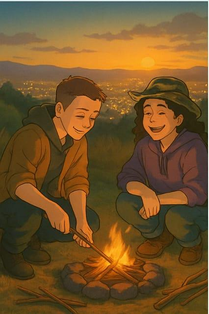

Tempo desde: 1º de janeiro de 2020
28/06 - Nosso Primeiro Encontro üçª
Nos conhecemos num barzinho com sinuca. A vibe bateu tão forte que, no fim da noite, ela me convidou pra dormir com ela. Assistimos filmes, trocamos carinhos e no outro dia, enquanto ela cozinhava pra nós, eu arrumei a torneira dela. E adivinha? Ela amou.
05/07 - Churrasco com Tomatinhos üåø
Nosso primeiro churrasco juntas no quiosque do condomínio. Ela fez o fogo, eu assei a carne e depois preparei um carreteiro que ela jurou ser o melhor da vida! E o mais especial: ela deixou eu usar os tomatinhos cereja que ela cultivou por meses.
12/07 - Fogueira e Vista do Morro üåÑ
Nossa primeira trilha no Morro Santana. Tentamos (por horas!) acender uma fogueira com itens naturais, e conseguimos! O pôr do sol iluminando a cidade lá do alto foi inesquecível. No dia seguinte, cerveja no parque e sorrisos largos.
